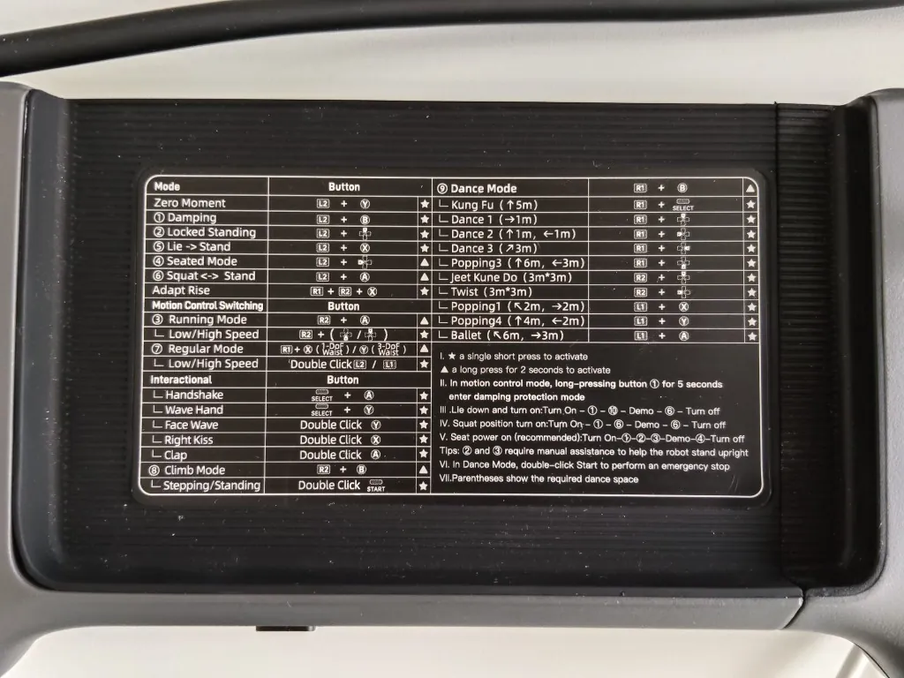

Varianti G1 EDU (U1–U10)
Codici del listino Unitree. La differenza tra i modelli è la base meccanica (23 o 29 DoF) e il manipolatore montato. Il G1 Air non permette lo sviluppo software proprio: nella tabella ufficiale Unitree la voce è presente solo per il G1 EDU.
| SKU | DoF | Manipolatore | Scheda |
|---|---|---|---|
| G1 Air | 23 | Dummy (non EDU) | Air |
| G1-U1 | 23 | Mani dummy, Jetson Orin NX | U1 |
| G1-U2 | 29 | Dummy + vita 3 DoF + braccio 7 DoF | U2 |
| G1-U3 | 43 | Dex3-1 tre dita, senza tattile | U3 |
| G1-U4 | 43 | Dex3-1 tre dita, con tattile | U4 |
| G1-U5 | n.d. | Inspire RH56DFQ, senza tattile | U5 |
| G1-U6 | n.d. | Inspire RH56DFTP, con tattile | U6 |
| G1-U7 | n.d. | Revo2 Basic (5 dita) | U7 |
| G1-U8 | n.d. | Revo2 Touch (5 dita, con tattile) | U8 |
| G1-U9 | 37 | Dex3-1 senza tattile (config. compatta) | U9 |
| G1-U10 | 35 | Revo2 Basic (5 dita) | U10 |
Prezzi nel listino pubblico. Per scegliere tra le versioni c'è la guida quale G1 scegliere; se il lavoro è da banco, guardate anche il G1-D.


Protezione fisica del robot
Telecomando R3
Il G1 si comanda con il telecomando Unitree R3, compatibile con tutta la gamma Unitree. Unitree dichiara una batteria da 780 mAh per circa 5 ore di uso (scheda R3). Per accenderlo, secondo il manuale utente G1: pressione breve sul tasto di accensione, poi pressione lunga oltre 2 secondi fino al beep.
Il telecomando di ricambio è a listino: G1 Remote Controller.
Comandi telecomando (firmware corrente)
Le combinazioni possono cambiare con la versione del firmware: controllate sempre l'adesivo sul vostro telecomando prima di usare il robot.
Legenda comandi stampata sul telecomando R3:
- ★ = pressione breve singola
- ▲ = pressione lunga di 2 secondi
- In motion control, tenendo premuto il damping (L2 + B) per 5 secondi si entra nella protezione damping. È l'arresto di emergenza indicato dal manuale: il robot scende lentamente a terra.

Zero moment / postura
| Comando | Tasti | Tipo |
|---|---|---|
| Zero moment | L2 + Y | ★ Coppia zero, giunti liberi: se il robot non è appeso cade |
| Damping | L2 + B | ★ Smorza i motori: è il comando per fermare il robot |
| Locked standing | L2 + ↑ | ★ In piedi con giunti bloccati |
| Alzata da sdraiato | L2 + X | ★ Lie → Stand (solo pavimento piano e duro) |
| Seduto | L2 + ← | ▲ |
| Squat ↔ stand | L2 + A | ▲ |
| Adapt rise | R1 + R2 + X | ★ |
Motion control
| Modalità | Tasti | Note |
|---|---|---|
| Running mode | R2 + A | ▲ |
| Velocità bassa/alta (run) | R2 + ↑ / ↓ | ★ |
| Regular mode (1 DoF vita) | R1 + X | ▲ Vita a 1 grado di libertà (G1-U1) |
| Regular mode (3 DoF vita) | R1 + Y | ▲ Vita a 3 gradi di libertà (G1-U2 e successivi) |
| Velocità bassa/alta (regular) | Doppio click L2 / L1 | ★ |
| Stepping / standing | Doppio click START | ★ |
| Climb mode | R2 + B | ▲ |
Debug mode (solo sviluppo SDK)
L2 + R2 ferma il programma di controllo del movimento, così non entra in conflitto con i comandi dell'SDK. Con L2 + A si verifica di essere in debug mode; se il robot non risponde come previsto, Unitree indica di ripetere L2 + R2 (Unitree, remote control). Serve solo in laboratorio, con il robot appeso, quando si comandano i motori a basso livello. Nell'uso normale con il telecomando non si entra in debug mode.
Sequenze di accensione consigliate (da sticker)
- Da seduto (consigliata): Accendi → (1) Damping → (2) Locked standing → (3) Running/Regular → demo → (4) Seduto → spegni. Passi (2) e (3) con assistenza manuale alle spalle.
- Da sdraiato: Accendi → (1) → (10) → demo → (6) → spegni. Il passo (10) non è numerato nella tabella dello sticker: verificatelo con la documentazione di consegna.
- Da squat: Accendi → (1) → (6) → demo → (6) → spegni.
Accensione batteria G1
- Inserite la batteria dal lato del robot, con l'interruttore rivolto verso il retro, fino allo scatto.
- Pressione breve sul pulsante di accensione, poi pressione lunga di almeno 2 s.
- Attendete circa 1 minuto: a fine avvio tutti i giunti sono in zero torque.
- Seguite la sequenza del telecomando: prima il damping (L2 + B), poi gli altri passi.
Metodo sospeso al telaio (lab)
Consigliato al primo avvio, con il telaio di protezione. Sospendete il robot e appoggiate i piedi a terra solo dopo la stabilizzazione in Regular mode. Braccia e gambe libere, nessun cavo in tensione.
Metodo da terra (L2+X)
Payload e braccia
Unitree dichiara un carico massimo per braccio di circa 3 kg sul G1 EDU (circa 2 kg sul G1 base) e precisa che varia molto con la postura del braccio (scheda G1).
Batteria e autonomia
Secondo Unitree il G1 monta una batteria intelligente a sgancio rapido da 9000 mAh per circa 2 ore di autonomia. Il valore reale scende con camminata continua e carichi sulle braccia.
- Per una giornata di prove servono almeno due batterie: la batteria aggiuntiva G1 è a listino a 880 €, il caricabatterie a 147 € (IVA esclusa).
- Spegnete il robot prima di sostituire la batteria e rimettetelo in damping prima di farlo alzare.
Rete e SSH
Portate il PC sulla subnet 192.168.123.0/24 con un IP statico libero: Unitree suggerisce 192.168.123.99. Non usate .161, .164 e .120. Il PC1 (.161) esegue il controllo di movimento Unitree e non è aperto agli sviluppatori; lo sviluppo si fa sul PC2 (.164).
- Ethernet diretto alla porta LAN del G1 (consigliato da Unitree)
- Wi‑Fi: secondo la documentazione LeRobot sul PC2 il Wi‑Fi è disattivato di default e va abilitato a mano; per installare pacchetti si può condividere la connessione del PC via Ethernet.
192.168.123.161MCU / motion controller Unitree192.168.123.164Jetson Orin (PC2), SSH unitree / 123192.168.123.120LiDAR Livox MID-360 (testa)ping 192.168.123.164
ssh unitree@192.168.123.164
# Password predefinita: 123unitree / 123 sono le credenziali predefinite riportate anche nella documentazione LeRobot. Unitree indica di chiedere le credenziali iniziali al supporto, quindi su alcune unità possono essere diverse. Dopo il primo accesso cambiate la password, soprattutto se il robot entra nella rete aziendale.
Problemi frequenti
- Il ping non risponde: controllate cavo Ethernet e IP del PC, poi riavviate il robot.
- Con l'SDK le articolazioni tremano: il motion controller è ancora attivo, oppure telecomando e SDK mandano comandi insieme. Per il controllo a basso livello entrate in debug mode; altrimenti fermate i comandi SDK.